| ONE CHAPTER AT A TIME |
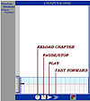
CLICK TO ENLARGE |
Each chapter will load and begin playing the animated sequence of dates and events automatically, but if you want to use them the controls along the bar at the bottom of each chapter's page will allow you to STOP, PLAY, FAST FORWARD and RELOAD the program.
The two other control buttons allow you to PRINT the chronology after the chapter sequence has finished, and to pop up the NARRATOR COLOR KEY (see below). |
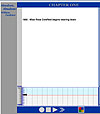
CLICK TO ENLARGE |
Dates and events appear in the order in which the reader learns about them in the narrative, but the place in which they appear locates them in a chronological sequence, with earlier events at the bottom and the most recent events at the top. |
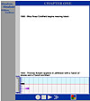
CLICK TO ENLARGE |
As an event first appears, it is in larger type, then as the next event in the narrative sequence appears the first recedes a bit into smaller type. The screen at left shows how the events referred to in the novel's first two paragraphs are displayed. |

CLICK TO ENLARGE |
If you don't PAUSE or FAST FORWARD it, a chapter takes about a minute and a half to come completely into focus. Once the ...loading... is finished, however, you can use the FAST FORWARD button to make all the dates and events appear immediately.
The full CHAPTER ONE is displayed at left.
The chronology for most chapters contains 15 events, which is the most the program is designed to hold. This limit means that a few tough choices had to made about what to leave out. And the program also required us to limit the number of words in each entry, which means that in several later chapters an event appears in two parts, moving upward, with the tag "(cont'd)" to identify the connection. |
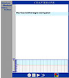
CLICK TO ENLARGE |
The bottom portion of each chapter is a graph that provides additional means for understanding and organizing the way Absalom, Absalom! tells its story. As each dated event appears in the white space, a marker appears on the graph locating the event in terms of the historical period spanned by the novel as a whole -- i.e. 1807 - 1910. Again, the earlier events are closer to the bottom. The graph is divided into three parts, around the Civil War, by color -- GREY: 1807-1860; RED: 1860-1865; BLUE: 1866-1910.
So the graph's down-to-up axis indicates the chronological sequence. The left-to-right axis indicates the narrative sequence -- the further to the right a marker is, the later in the chapter we hear of the event it represents.
When you move your cursor over a marker, the associated text will change to enable you to identify both the narrative source of the event (the color of the text), and its larger historical context (the color of the background). The image at left shows the CHAPTER ONE sequence paused after the first event has appeared, and the cursor over the event's marker.
Moving the cursor away from a marker will clear it, though you may need to do this more than once. And if you click on a marker, its event remains in graph display mode until you click on it a second time; this feature comes into play when you're studying multiple chapters together (as explained below). |
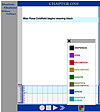
CLICK TO ENLARGE |
We hear the novel's story from many different narrative sources. Clicking on the multi-colored control button in the bar at the bottom of the page brings up a KEY to the colors used to identify the source for each piece of the story. As the KEY at left indicates, from the color of the text we can tell that the first piece of the story we get -- the information that Miss Rosa began wearing black in 1866 -- comes from the THIRD-PERSON NARRATOR. |
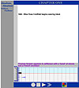
CLICK TO ENLARGE |
The image at left now shows the CHAPTER ONE sequence after the first two events have appeared, and with the cursor over the second event's marker. The purple text indicates that Miss Rosa is the source for this piece of the story, and the grey background indicates that it took place during the ante bellum period. The fact that the text is at the bottom of the chronology indicates that it is the (historically) earliest event mentioned in CHAPTER ONE, and it is where the story begins for Rosa, but you can see from the graph that this is not where the story the whole novel tells ultimately starts. |
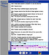
CLICK TO ENLARGE |
At left: CHAPTER ONE after program has finished. In order from bottom to top, the chronology lists 15 events we hear about in this chapter, which take place between 1833 (when Sutpen arrives in Jefferson) and 1909 (when Rosa summons Quentin to her house).
By moving your cursor across the graph, from marker to marker, from left to right, you can review the order in which this chapter reveals its pieces of the story to us, moving back and forth in time, and can also note their two different sources -- i.e. the narrator and Rosa.
When the sequence of events has finished appearing, you can use the P button to print out a copy of it.
Faulkner's story grows increasingly more complex as it unfolds and folds in and refolds, but the electronic chronology will work the same way in each of the remaining eight chapters. |
ALL NINE CHAPTERS AT ONCE
(Don't read on until you've finished the novel -- what follows gives away some plot details.) |
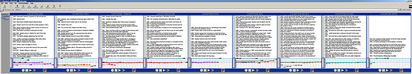
If you let the whole animation run, it will take 10-15 minutes to fill in all the events listed in all nine chapters. You can cut that time to less than a minute by using each chapter's FAST FORWARD button as soon as the chapter's ...loading... stage is finished.
|
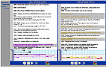
CLICK TO ENLARGE |
Once multiple chapters are displayed, you can use the chronology to explore patterns within the novel's narrative technique, and some of the complexities of its narration. Clicking on a marker in a chapter's graph will highlight all other references to that particular event in the other chapters. The example at left shows how a series of events summed up quickly by Miss Rosa in CHAPTER ONE are rehearsed in more detail from General Compson's perspective in CHAPTER TWO, with new information interpolated into the story. |
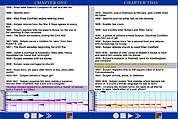
CLICK TO ENLARGE |
In this example you can see how the first "fact" provided by Miss Rosa in CHAPTER ONE is corrected or at least changed by another narrative authority in CHAPTER TWO -- i.e. what Rosa called Sutpen's first arrival in Jefferson was, according to General Compson's account, a return, a re-appearance. "Returning" and "re-appearing" are good tropes for what the narrative technique Faulkner uses is continually doing with the story. By looking at the two chapters side-by-side, you can also see, for example, how CHAPTER TWO adds new "narrators" (tan for General Compson, red for Mr. Compson), and how it's focused more consistently on the earliest part of Sutpen's life in Yoknapatawpha (the 1830s), though at the very end the story jumps back to a still earlier period (which is another pattern the graph allows us to see -- note how this happens in CHAPTER ONE as well). |
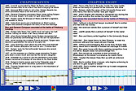
CLICK TO ENLARGE |
This electronic chronology allows us to see how in several places the narrative offers competing, incompatible versions of the "facts." From Mr. Compson in CHAPTER FOUR, for example, we first hear that Henry rescued Bon after Bon had been wounded at the Battle of Pittsburgh Landing in 1862. But as you can see at left, in CHAPTERS SEVEN & EIGHT this version of the event is first reconfirmed from another narrative point-of-view, and then contradicted by Quentin and Shreve's insistence that it was in fact Bon who had rescued the wounded Henry in that battle. |
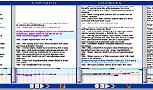
CLICK TO ENLARGE |
No monitor or computer screen is wide enough to display all nine chapters at once, but you can scroll right and left to move back and forth through the chapters. And by clicking on a marker in the graph, you can lock onto all the linked events in other chapters, so as you scroll they remain displayed. For the example at left, I clicked onto the very first marker in CHAPTER ONE -- connected to the fact we learn in the novel's first paragraph, that Miss Rosa has worn black "for forty-three years now," and then scrolled to the way that event is ultimately "explained" by details we learn in CHAPTER FIVE & SIX.
This example also dramatizes how the graphs make it easy to see what parts of the larger story the different chapters tend to emphasize: CHAPTER FIVE focuses on the War era, while CHAPTER SIX covers the post-war years. |
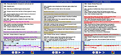
CLICK TO ENLARGE |
WARNING: Markers and links are a bit tricky. The only way to clear a marker that has been clicked on is to click on it again, and any time the cursor moves over a marker (accidentally or deliberately) it will highlight the item it represents, so it is unfortunately easy to inadvertantly create unprogrammed patterns. The example at left, in which three different sets of links are simultaneously highlighted, shows how the program itself can become a kind of new "narrator," adding layers of complexity and ambiguity into the story that Faulkner didn't intend. It's a good idea to make sure all links have been cleared before clicking on a new item to see what it is linked with.
While learning to use this program in its full capacity may take a little time and practice, we hope you'll feel the new ways it provides to experience Absalom, Absalom! justify the investment. |
){kind=link}
){kind=link}
){kind=link}
)
){kind=link}
){kind=link}
){kind=link}
){kind=link}
){kind=link}
){kind=link}
){kind=link}
){kind=link}
){kind=link}